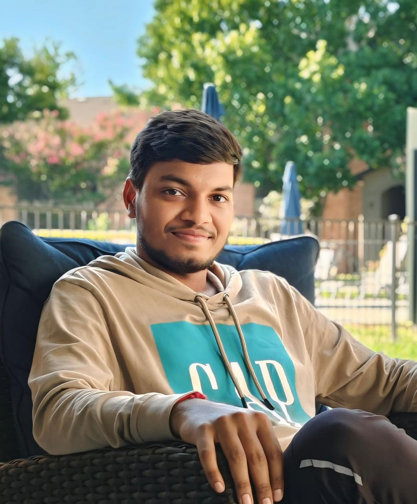

Hi, I'm
AI/ML Engineer at Effulgent Inc · Building production LLM agents, RAG & evals · M.S. in Artificial Intelligence, UNT
I'm Maneesh Kumar Chintakindi, an AI/ML engineer with a Master's in Artificial Intelligence from the University of North Texas (GPA 3.6/4.0, May 2026). I build LLM-powered systems that run in production: agents, retrieval, ranking, and the evals that keep them honest.
At Effulgent Inc, I work on Placewise, a hiring platform that scores every applicant through a multi-step Python pipeline. I integrated the Claude API and Voyage AI embeddings into its ranking (recall@10 up from 48% to 89%), built a pgvector hybrid search service that cut p50 latency from 781 to 221 ms, and built multi-agent workflows for B2B outreach and real-time trading dashboards.
I care about measuring before and after a change. That means a 597-document adversarial test set that gates every release, 300 automated Pytest tests, and answer-key benchmarks for retrieval. I ship daily with AI coding agents and review and own what they write.
Before that I built a RAG knowledge assistant in my UNT graduate practicum, and spent over two years writing Python automation and Pytest frameworks for Ericsson's backup and recovery operations. I'm Azure AI Engineer Associate certified and open to AI Engineer, Applied AI, and Software Engineer (AI) roles.
Claude API, Voyage AI Embeddings, Multi-Agent Systems, Tool Use & Function Calling, Structured Outputs, pgvector Hybrid Search, Ranking (recall@k / precision@k), Adversarial Test Sets, LLM Evals, Daily development with AI coding agents.
LLM Fine-tuning (LoRA, PEFT, RLHF), Prompt Engineering, Retrieval-Augmented Generation (RAG), LangChain, FAISS, Hugging Face Transformers, Structured Output Generation, Function Calling, Agentic Workflows, Chatbot Development.
Python, SQL, TypeScript, JavaScript, R, C · FastAPI, Flask, Django, Node.js, React, WebSockets, REST APIs — clean, tested code for backends, data pipelines, and automation.
Supervised & Unsupervised Learning, Classification, Regression, Clustering, Decision Trees, Random Forests, XGBoost, CNNs, RNNs, LSTMs, Transformers, Scikit-learn, TensorFlow, Keras, PyTorch.
Text Classification, Sentiment Analysis, Named Entity Recognition, Text Preprocessing, Tokenization, Word Embeddings (Word2Vec, GloVe), Hugging Face Transformers, Time Series Analysis.
Exploratory Data Analysis (EDA), Statistical Modeling, Hypothesis Testing, Feature Engineering, Pandas, NumPy, Matplotlib, Seaborn, Plotly, Tableau, Power BI — translating data into clear, actionable insights.
Docker Compose, GitHub Actions CI/CD with health checks & automatic rollback, Cloudflare, Model Versioning, Experiment Tracking (MLflow), Model Monitoring & Drift Detection, Streamlit, Flask, Django, FastAPI, Docker, REST API Development, Pytest, Pylint, Postman, Model Serialization (Pickle, ONNX).
Microsoft Azure (AI Engineer Associate — Certified; AI Services, ML Studio, Cognitive Services, Blob Storage, Azure Functions), Google Cloud Platform (production deployments, BigQuery, Vertex AI basics), AWS (S3, basics) — deploying and scaling AI workloads in the cloud.
ETL Pipeline Design, Data Cleaning & Preprocessing, Data Wrangling, Big Data Concepts, Apache Spark (basics), Database Design, PostgreSQL (job queues, pgvector, query optimization), MySQL, MySQL Workbench, Data Warehousing concepts.
Git & GitHub, Jira, Confluence, Bugzilla, PuTTY, Jupyter Notebook, VS Code, PyCharm, Google Colab, Agile Methodology, Technical Documentation, Research & Analytical Thinking, Cross-functional Collaboration.
An end-to-end GenAI application that answers questions over uploaded documents using Retrieval-Augmented Generation — built during a graduate practicum with production-style architecture and documentation.
An end-to-end deep learning system that classifies human emotions from speech audio in real time — with applications in mental health monitoring, customer experience analytics, and adaptive AI interfaces.
A robust multi-algorithm email classification system that combines traditional ML and deep learning for high-precision spam detection, paired with a real-time web interface and executive-level analytics dashboards.
Industry-recognized certification validating expertise in designing, building, and deploying AI solutions on Microsoft Azure. Covers applied AI workloads including NLP, computer vision, conversational AI, document intelligence, and knowledge mining — directly relevant to enterprise AI and data science roles.
Comprehensive training in the full generative AI development lifecycle — including transformer architecture, LLM pre-training and fine-tuning (RLHF, PEFT), prompt engineering, and responsible deployment strategies. Highly applicable to modern AI/ML engineering and data science workflows.
Certification in deploying ChatGPT and OpenAI models in real business settings.
Currently preparing for Anthropic's developer certification covering building applications with Claude.
Cricket isn't just a game for me — it's a passion. From the strategy of setting a field to the thrill of a last-over finish, cricket teaches teamwork, patience, and composure under pressure. Skills I bring to every project too.
My #1 PassionMusic is my reset button. Whether it's focus playlists while deep in a model training run or winding down after a long day, the right track sets the tone. I believe great rhythm — in music and in code — makes all the difference.
Always ListeningThe AI landscape evolves fast, and I love keeping up. From experimenting with the latest LLMs to exploring emerging frameworks and tools, curiosity drives me. I'm at my best when I'm learning something new every week.
Lifelong LearnerTraveling broadens perspectives in ways no textbook can. Every new city, culture, and conversation adds a layer to how I think and problem-solve. From Hyderabad to Dallas — I carry every experience into the work I do.
Always ExploringI'm open to full-time roles in AI/ML Engineering, Applied AI, and Software Engineering (AI), anywhere in the US. Whether you have an opportunity, want to collaborate on a project, or just want to connect — I'd love to hear from you!
📩 Say Hello